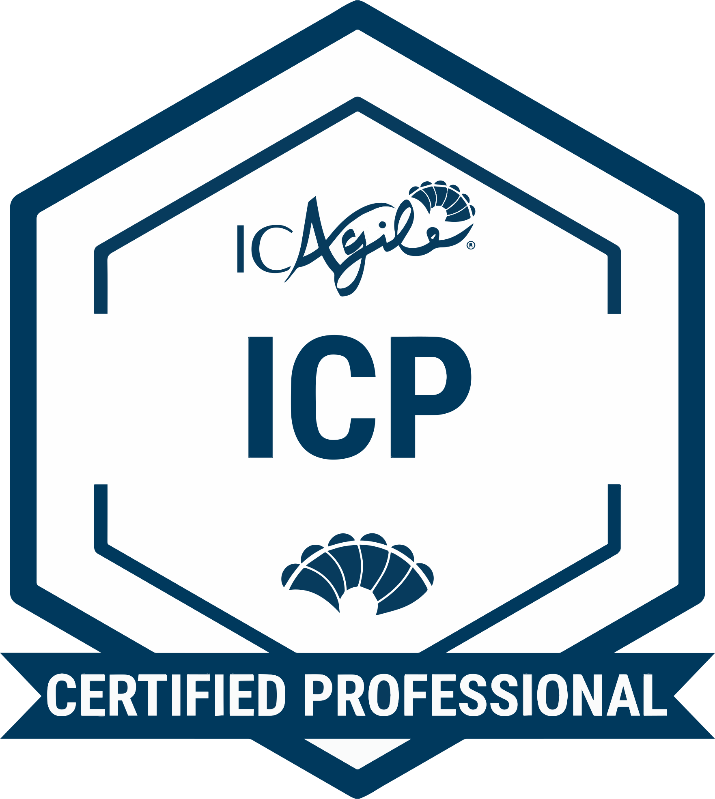
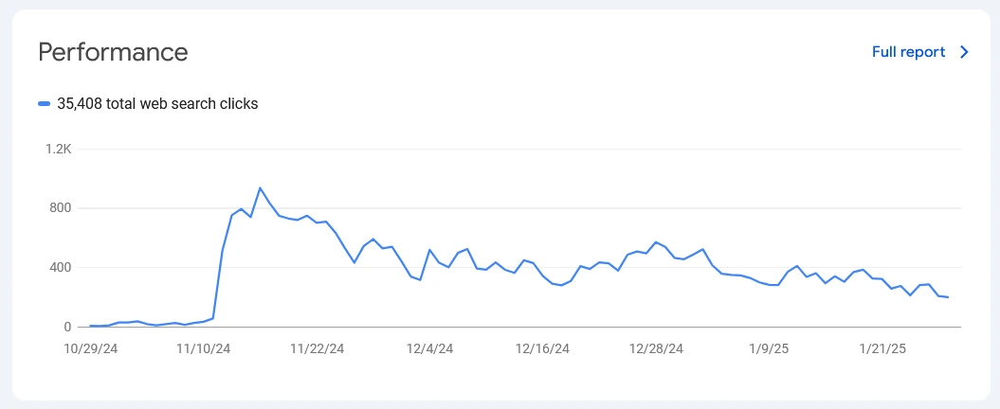
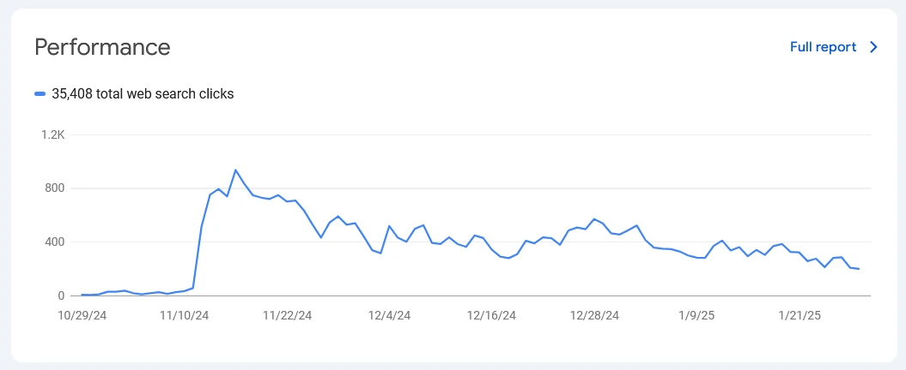

Colossal Kickoff
February 2024-Present

An assymetric arcade sports game where three Humans team up to take down a colossal Monster in action packed, highly lethal Soccer matches! Dominate as five monsters with totally unique abilities and play styles, or team up as the humans to outsmart the brute, in chaotic arenas all across the world.
Colossal Kickoff is a fully featured title launching in 2025 on Steam. I'm the acting Project Manager for the game, in addition to supplemental programming, and the lead on graphic design, marketing, and social media.
I coordinated our team working in two-week sprints to deliver functioning builds with new and pollished content in periods of six weeks.
MU Meeples Officer
March 2023-Present

As the Vice President of Miami University's tabletop gaming club, as well as the club liason to our parent organization the League of Geeks, I've been heavily involved with project management, event planning, and working within a multidisciplinary team. Projects I've worked on have included:
- Negotiating and communicating with convention organizers ReedPop to secure a contract of entry for club members to MagicCon Chicago in both 2024 and 2025, worth over $1,400 in total.
- Running semesterly charity events in collaboration with Miami University's Library programs. We've raised over $2,000 for the Trevor Project and Extra Life.
- Collaborating with clubs from across the university for our yearly "GeekCon" convention. We've collected and acted upon student feedback, organized with student artists to sell their work in an "Artist's Alley", and even reached out to special guests such as (TBA) to negotiate contracts and plan their appearances.
- Procuring over $6,000 worth of donated items from a local small business through communication and partnership. I spearheaded this initiative, and it's been the largest amount of donations the League of Geeks has ever recieved from a single source in its history.
- Worked in student outreach and marketing for the club, including producing graphics for use on physical media such as banners and fliers. (Banner artwork pictured here.)
ICAgile Professional Certification
April 2024

I've undergone a thorough training process in the Agile methodology
for team coordination and leadership.
View Credential.


 
